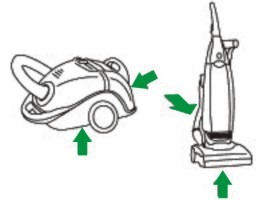
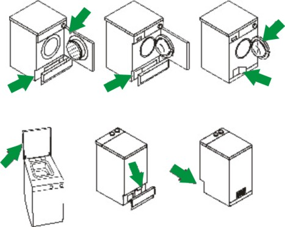
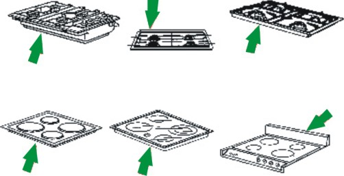
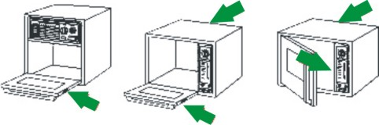
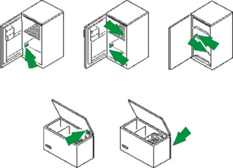
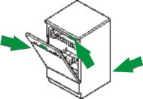

márka-szerviz.hu
márka-szerviz.hu
Szerelőre lenne szüksége háztartási gépéhez?
RÓLUNK
Kedvező árak
Az alkatrészeket tömegével rendeljük és tartjuk raktáron, vagy rövid határidővel beszerezzük.


Bízza a szerelőre!
Több, mint 40 márkához tudunk alkatrészeket rendelni sokféle kis- és nagykészülékhez egyaránt.
Nyomonkövetés
A szerelésről és az alkatrész elérhetőségéről folyamatos tájékozatást adunk.

-
Több, mint 1 000 000 gépet megjavítottunk már 1990 óta
-
Budapesten három átvételi ponttal rendelkezünk, ahova elhozhatja elromlott kis méretű készülékét.
-
A legtöbb házatartási készüket javítjuk, részletes lista a szerviz menüpontban!
-
Tapasztalt kollégáink minden hétköznap 08:00 - 17:00-ig várják hívását!
-
Alkatrész kínálatunkban több tízezer termék található raktáron, illetve több milliót tudunk rendelni!
-
A Beko, Candy és Haier márkák hivatalos országos szervize vagyunk!

Folyamatosan azon dolgozunk, hogy minél jobb szolgáltatást nyújtsunk Önnek!
Szerelőink felkészülten várják a munkákat, több, mint negyven márkához!
-
Ön bejelenti szerviz igényét
-
Mi megkeressük Önt és felmérjük a hibát
-
Lehetőség szerint helyszínen javítunk. Ha mégsem, akkor még aznap megrendeljük Önnek az alkatrészt
-
Megjavítjuk a készülékét

Kis háztartási gépekre vonatkozó szervizleadó pontok:
- 1089 Budapest, Baross u. 127. - csak kisgép
- 1016 Budapest, Hegyalja út 23. - csak kisgép
- 1152 Budapest, Telek utca 13. - kis és nagygép
Az alábbi márkákkal dolgozunk:
Az alábbi beépített vagy szabadonálló készülékeket javítjuk:
A kapcsolatfelvételhez hívjon minket a
+36 1 210 9237-es telefonszámon, írjon emailt, vagy töltse ki gyors online hibajelentő kérdőívünket!
ÁRAK ÉS FELTÉTELEK
A lent feltüntetett árak bruttó összegek. Az árak tartalmazzák a hiba-megállapítást és a munkadíjat; de a kiszállási díjat és alkatrész árát nem.
Az árak 2021. január 01-től érvényesek visszavonásig.
Bevizsgálási és kiszállási díjaink:
A javítási árajánlat elfogadása esetén a hiba megállapítás díja (5000.-Ft) a végszámlából levonásra kerül. A szerelő nagyobb összegű javításnál előleget kérhet az ügyféltől. Amennyiben a javítási árajánlat elutasításra kerül abban az esetben a kiszállási és hiba megállapítási díjat kell csak kifizetni. Budapesten és pest megyében 3.990 Ft. a kiszállás.
A hiba megállapítás díja a következőket tartalmazza:
- kiszállás
- szakszerű bevizsgálás
- konkrét, teljes árajánlat
Garancia:
Szerelői munka garanciafizetős cím esetében (csak az elvégzett munkára vonatkozik nem a készülékre):
- 3 hónap 10.000.-Ft alatti javítás esetében
- 6 hónap 10.000 – 20.000.-Ft közötti javítás esetén
- 12 hónap 20.000.-Ft feletti javítás esetén
Páraelszívó készülékek beüzemelése:
Az alap beüzemelési díj tartalmazza:
- a készülék hálózatra történő bekötését (kivezető cső maximum 5 méter távolságig és villamos hálózat maximum 2 méter távolságig)
- kezelő betanítása a készülék használatára
- a garancia elindítása
Az ár nem tartalmazza az esetlegesen szükséges egyéb segédanyagokat (pl.: elvezető cső, vezeték, szénszűrő, stb.). A szerelő csak abban az esetben vállalja a készülék beüzemelést, ha a készülék a falra fel van szerelve, megfelelően van rögzítve, és a csatlakozási pontok megfelelő távolságon belül vannak (kivezető cső maximum 5 méter távolságig és villamos hálózat maximum 2 méter távolságig) illetve, ha az elvezetés a bútoron keresztül már biztosított (ki van vágva a cső helye). A szerelő megtagadhatja a beüzemelést, amennyiben nem találja megfelelőnek a készülék elhelyezését, ebben az esetben a kiszállás és hiba megállapítási díjat kell fizetni.
Gáz- és villany készülékek beüzemelése:
Az alap beüzemelési díj tartalmazza:
- a szerelő felméri, hogy az adott körülmények között a készülék használható-e
- a készülék hálózatra történő bekötését (gáz illetve villany maximum 2 méter távolságig)
- beállítás, beszabályozás
- kezelő betanítása a készülék használatára
- a garancia elindítása
Az ár nem tartalmazza az esetlegesen szükséges egyéb segédanyagokat ( pl.: gáz bekötőcső, csap, vezeték, stb.). A szerelő az első oldható kötésig bonthatja meg a gázrendszert és csak annak elzárt állapotában. A jelenlegi szabványoknak megfelelő saválló gáz bekötő cső 2008.12. óta van forgalomban, ennek (amennyiben az ügyfél rendelkezik bekötőcsővel) és a rendszer egyéb elemeinek ( pl.: csap ) megfelelőségét minden esetben a szerelő a helyszínen bírálja el. Ez azt jelenti, hogy amennyiben nem találja a szabványnak megfelelőnek (vagyon és élet biztonság), megtagadhatja a beüzemelést.
Villany bojler készülékek beüzemelése:
Az alap beüzemelési díj tartalmazza:
- a készülék hálózatra történő bekötését (vízhálózat maximum 50 cm távolságig és villamos hálózat maximum 2 méter távolságig)
- beállítás, beszabályozás
- kezelő betanítása a készülék használatára
- a garancia elindítása
Az ár nem tartalmazza az esetlegesen szükséges egyéb segédanyagokat (pl.: vízbekötő bekötőcső, vezeték, stb.). A szerelő csak abban az esetben vállalja a készülék beüzemelést, ha a készülék a falra fel van szerelve, megfelelően van rögzítve és a csatlakozási pontok megfelelő távolságon belül vannak (vízhálózat maximum 50cm távolságon belül és villamos hálózat maximum 2 méter távolságon belül) A szerelő nem végzi el a beüzemelést, amennyiben nem találja a megfelelőnek a készülék elhelyezését. Ebben az esetben a kiszállási és hiba megállapítási díjat kell fizetni.
| Kiszállási díj | Bruttó ár |
|---|---|
| Budapest területén kiszállás (1-es irányítószámmal kezdődő helyeken) | 3 990 Ft |
| Budapesten kívüli kiszállás (2-es irányítószámmal kezdődő helyeken) | Egyedi ajánlat alapján |
| Megnevezés | Bruttó ár |
|---|---|
| Hiba megállapítás (Bevizsgálás) | 5 000 Ft |
| 1 db készülék beüzemelés (nem gázüzemű készülék esetén) | 7 000 Ft |
| 2 db készülék beüzemelés (nem gázüzemű készülék esetén) | 13 000 Ft |
| 3 db készülék beüzemelés (nem gázüzemű készülék esetén) | 17 000 Ft |
| Gázkészülékek esetén | Bruttó ár |
|---|---|
| 1 db készülék beüzemelés hagyományos álló készülékre (tűzhely, gázfőzőlap) | 11 000 Ft |
| 2 db készülék beüzemelés pl. Főzőlap + sütő (2 külön gép, beépített) | 20 000 Ft |
| 1 db készülék beüzemelés pl. Beko pl.GM15321DX (5 égős gáz főzőlapok) | 13 000 Ft |
| 1 db készülék beüzemelés pl. Candy Trió | 20 000 Ft |
| PB gázra átállás (fúvóka csere) a beüzemelési díjon felül: | 3 500 Ft |
| Régi beépített készülék kiszerelése 1 készülék a beüzemelési díjon felül: | 3 000 Ft |
| Régi beépített készülék kiszerelése (2 készülék) a beüzemelési díjon felül: | 5 000 Ft |
| Mosógép | Bruttó ár |
|---|---|
| Szűrő tisztítás | 6 000 Ft |
| Láb csere | 6 000 Ft |
| Hálózati vezeték, kifolyócső hosszabbítása | 6 000 Ft |
| Tető csere | 6 500 Ft |
| Ajtókapcsoló csere | 11 000 Ft |
| Szivattyú csere | 11 000 Ft |
| Fűtőbetét csere | 11 000 Ft |
| Ajtófül (keret, ajtó, zsanér) csere | 11 000 Ft |
| Érzékelő / szenzor csere | 11 000 Ft |
| Vízszintszabályzó csere | 11 000 Ft |
| Szíj csere | 11 000 Ft |
| Ajtótömítés csere | 11 000 Ft |
| Csapágyazás felültöltős (1 oldal) | 11 000 Ft |
| Csapágyazás felültöltős (2 oldal) | 12 000 Ft |
| Programkapcsoló csere | 12 000 Ft |
| Elektronika csere | 12 000 Ft |
| Belső dugulás elhárítás | 13 000 Ft |
| Főmotor csere | 13 000 Ft |
| Csapágyazás elöltöltős csillagosnál | 15 000 Ft |
| Mosóegység csere | 15 000 Ft |
| Dob csere (felültöltős) | 15 000 Ft |
| Csapágyazás üst megbontásával (műhelybe be és visszaszállítással) | 25 000 Ft |
| Szárítógép | Bruttó ár |
|---|---|
| Érzékelő / szenzor csere | 12 000 Ft |
| Elektronika csere | 12 000 Ft |
| Szíj csere | 16 000 Ft |
| Főmotor csere | 16 000 Ft |
| Hőszivattyú tisztítás (műhelybe be és visszaszállítással) | 29 900 Ft |
| Mosogatógép | Bruttó ár |
|---|---|
| Szórókar csere | 10 000 Ft |
| Szivattyú csere | 11 000 Ft |
| Elektronika csere | 11 000 Ft |
| 3 oldalú tömítés csere | 11 000 Ft |
| Érzékelő / szenzor csere | 11 000 Ft |
| Vízszintszabályzó csere | 11 000 Ft |
| Labirintus csere | 11 000 Ft |
| Zsanér csere | 11 000 Ft |
| Fűtőbetét csere | 13 000 Ft |
| Főmotor csere | 14 000 Ft |
| Aknatömítés csere | 15 000 Ft |
| Só tartály csere | 15 000 Ft |
| Beépített készülék ki-be szerelés | 4 000 Ft |
| Elektromos Főzőlap | Bruttó ár |
|---|---|
| Indukciós készülékjavítás | 12 000 Ft |
| Hagyományos főzőzóna csere | 12 000 Ft |
| Kerámia főzőzóna csere | 12 000 Ft |
| Kerámialap csere | 12 000 Ft |
| Elektronika csere | 12 000 Ft |
| Tűzhely | Bruttó ár |
|---|---|
| Gázbekötő cső csere | 7 000 Ft |
| Hagyományos főzőlap csere | 10 000 Ft |
| Sütő fűtőbetét csere | 10 000 Ft |
| Zsanércsere | 10 000 Ft |
| Külső-üveg csere | 10 000 Ft |
| Kerámia főzőlap csere | 11 000 Ft |
| Kerámialap csere | 11 000 Ft |
| Főzőlap termoelem csere | 11 000 Ft |
| Hőfokszabályzó csere | 11 000 Ft |
| Funkcióválasztó kapcsoló csere | 11 000 Ft |
| Elektronika csere | 11 000 Ft |
| Sütő termoelem csere | 12 000 Ft |
| Sütő kamra csere | 25 000 Ft |
| Beépített készülék ki-be szerelés | 4 000 Ft |
| Hűtőgép | Bruttó ár |
|---|---|
| Hőfokszabályzó csere | 10 000 Ft |
| Elektronika csere | 10 000 Ft |
| Ajtógumi csere | 10 000 Ft |
| Érzékelő / szenzor csere | 10 000 Ft |
| Ajtó megfordítás | 12 000 Ft |
| Ajtó csere | 12 000 Ft |
| Ajtócsere (ajtóba elektronika van) | 12 000 Ft |
| Ajtó megfordítás (ajtóban elektronika van) | 14 000 Ft |
| Gáztöltés /anyaggal R600a/ | 20 000 Ft |
| Kompresszor csere /gáztöltet R600a/ | 21 000 Ft |
| Elpárologtató csere /gáztöltet R600a/ | 24 000 Ft |
| Beépített készülék ki-be szerelése | 4 000 Ft |
| Side by Side (SBS) hűtőgép | Bruttó ár |
|---|---|
| Hőfokszabályzó csere | 12 500 Ft |
| Elektronika csere | 12 500 Ft |
| Ajtó csere | 12 500 Ft |
| Ajtógumi csere | 12 500 Ft |
| Érzékelő / szenzor csere | 12 500 Ft |
| Gáztöltés /anyaggal R600a/ | 22 000 Ft |
| Kompresszor csere /gáztöltet R600a/ | 23 000 Ft |
| Elpárologtató csere /gáztöltet R600a/ | 26 000 Ft |
| Elektromos bojler | Bruttó ár |
|---|---|
| Hőfokszabályzó / szenzor csere | 10 000 Ft |
| Elektronika csere | 10 000 Ft |
| Hő korlátozó csere | 10 000 Ft |
| Nyomáscsökkentő csere | 14 000 Ft |
| Biztonsági szelep csere | 14 000 Ft |
| Vízkőtelenítés | 14 000 Ft |
| Fűtőszál csere | 14 000 Ft |
| Anód csere | 14 000 Ft |
| Záró fedél csere | 14 000 Ft |
| Tömítés csere | 14 000 Ft |
| Páraelszívó (hagyományos vagy kürtős) | 10 000 Ft |
|---|---|
| Sziget páraelszívó (mennyezetre szerelt) | 13 000 Ft |
| Mikrohullámú sütő | Bruttó ár |
|---|---|
| Csillámlap csere | 6 000 Ft |
| Biztosíték csere | 8 000 Ft |
| Egyéb javítás | 11 000 Ft |
| Egyéb díjak | Bruttó ár |
|---|---|
| Kölcsön készülék biztosítása a javítás időtartama alatt (maximum 30 nap) | 12 000 Ft |
| Műhelyi bevizsgálás beszállítással és visszaszállítással | 13 500 Ft |
| Készülékszállítás | 5 000 Ft |
| Készülék ki-be szállítás | 9 000 Ft |
| Ügyfél által behozott gép bevizsgálása kisgép (bármely boltban leadható) LEADÁSKOR FIZETENDŐ | 2 500 Ft |
| Ügyfél által behozott gép bevizsgálása nagygép leadás csak Telek utca LEADÁSKOR FIZETENDŐ | 5 000 Ft |
Jelentse be online az elromlott, vagy beüzemelendő készülékét!
Töltse ki a lenti kérdőívünket, körülbelül öt perc alatt! Ezzel megspórolja a várakozást, és telefonos költségét is!
Rövid időn belül felhívjuk és árajánlatot teszünk!
Súgó
Márkánként és készülékenként eltérhet, hogy a gyártó hova rögzíti a készülék azonosítóit tartalmazó adattáblát. Ehhez próbálunk most egy kis iránymutatást adni, hogy gyorsabban menjen a szolgáltatás.
Porszívó
A porszívók esetében az adattáblát a következő helyeken találhatja meg: A készülék alján, hátulján!
Mosógép
A mosógépek esetében az adattáblát a következő helyeken találhatja meg: Elöltöltős mosógépek esetében: Az ajtó belső keretén,alul a szűrőajtón, vagy az alsó burkolati elem mögött! Felültöltős mosógépek esetében: A fedél élén, az alsó burkolati elem mögött, vagy a gép hátulján!
Főzőlap
A főzőlapok esetében az adattáblát a következő helyeken találhatja meg: A főzőlap elején alul, vagy a hátulján az élén!
Mikrohullámú sütő
A mikrohullámú sütők esetében az adattáblát a következő helyeken találhatja meg: Az ajtó élén, a keret élén, vagy a hátulján!
Tűzhely
A tűzhelyek esetében az adattáblát a következő helyeken találhatja meg: Az ajtó alján, a fedő/tepsi tároló oldalán, az ajtó kereten,

Hűtőgép
A hűtők esetében az adattáblát a következő helyeken találhatja meg: Az zöldségtárolót kihúzva a hűtő oldalfalán!
Mosogatógép
A mosogatógépek esetében az adattáblát a következő helyeken találhatja meg: A ajtó élén, a gép hátulján, vagy a kereten!
A különböző márkák eltérő azonosító neveket használnak. A legjobb mindig, ha Ön egy adattábla fotót küldd nekünk, de az alábbi táblázat segíthet!
| Márka | Modell | Termék azonosító | Sorozatszám |
|---|---|---|---|
| AEG | Modell | PNC (9-cel kezdődő 9 jegyű számsor + 2 jegyű verziószám) | Szériaszám (8 jegyű számsor) |
| Amica | Modell és termékkód | 14 jegyű számsor (sorozatszám) | |
| Ardo | Modell és típus | 22 jegyű számsor (gyártási évvel kezdődő) | |
| Ariston | Modell | 11 számjegyű ipari kód | S/N szám (9 számjegyű) |
| Ariston bojler ( Bluker , Junior , Perla ,Regent , Superlux ) | Modell | 11 számjegyű ipari kód | S/N szám (9 számjegyű) |
| Bauknecht | Modell és típus | Szervizszám (85-tel kezdődő, 12 számjegy) | |
| Beko | Típus | 10 jegyű kód | |
| Bosch | Típus | E-nr | FD szám |
| Braun | Típus | 4 jegyű számsor /"OC"-vel kezdődő számsor ha van | |
| Candy | Modell | Fantázianév | Gyári szám |
| Cata | Típus | 8 jegyű azonosító | |
| Constructa | E-nr | FD szám | |
| De-Lonhghi | Típus | ||
| Dirt Devil | Típus | ||
| Dometic | Modell | PNC (9-cel kezdődő 9 jegyű számsor + 2 jegyű verziószám) | Széria ha van! |
| Dyson | Modell | ||
| Electrolux | Modell | PNC (9-cel kezdődő 9 jegyű számsor) | Szériaszám (9 jegyű számsor) |
| Elektra Bregenz | Típus | 10 jegyű számsor | |
| Eta | Modell és típus | min. 3 v. 4 számjegy | |
| Fagor | Modell | PNC (9-cel kezdődő 9 jegyű számsor) | Gyári szám (8 jegyű számsor) |
| Gaggenau | E-nr | FD szám | |
| Gaggia | Modell | ||
| Gorenje | Modell és típus | ART szám (6 számjegyű számsor) | Szériaszám (8 jegyű számsor) |
| Haier | Típus | 11 számjegyű számsor | |
| Hajdu | Típus | ||
| Hajdu Zerowatt | Típus | 3-assal kezdődő 8 jegyű számsor | |
| Hoover | Típus | 3-assal kezdődő 8 jegyű számsor | |
| Iberna | Típus | 3-assal kezdődő 16 jegyű számsor | |
| Ignis | Modell és típus | Szervizszám (85-tel kezdődő, 12 számjegy) | |
| Indesit | Modell | Ipari kód (11 számjegyű számsor) | S/N szám (9 számjegyű) |
| Karancs | Típus | ||
| Kenwood | Típus | ||
| Komfort | Típus | ||
| Krups | REF.N szám | ||
| LG | Modell | ||
| Liebherr | Típus | ||
| Mora | Modell és típus | régi: TÍPUS (pl.: 1401.xxxx)/ új: ART | Szériaszám |
| Moulinex | Modell és típus | REF.N.szám | |
| Neff | E-nr | FD szám | |
| Panasonic | Típus | ||
| Pelgrim | Típus | ||
| Philips | Típus | ||
| Polar | Modell és típus | Szervizszám (85-tel kezdődő, 12 számjegy) | |
| Privileg | Amilyen adat van! Lehet 85-ös, PNC...stb | ||
| Progress | Modell | PNC (9-cel kezdődő 9 jegyű számsor + 2 jegyű verziószám), | Szériaszám, ha van! |
| Rowenta | Típus | ||
| Samsung | Modell | M/C szám (ált. "/" jeles) | |
| Seppelfricke | Típus | ||
| Siemens | E-nr | FD szám | |
| Smeg | Típus | ||
| Stiebel Eltron | Típus | ||
| Szarvasi | Típus | ||
| Techwood | Típus | ||
| Tefal | REF.N szám | ||
| Teka | Típus | REF.N szám | |
| Thomas | Fantázianév | ||
| Ufesa | E-nr | FD szám | |
| Vesta | Típus | ||
| Whirlpool | Modell és típus | Szervizszám (85-tel kezdődő, 12 számjegy) | |
| Zanussi | Modell | PNC (9-cel kezdődő 9 jegyű számsor + 2 jegyű verziószám) | Szériaszám, ha van! |
| Zelmer | Típus | ||
| Zerowatt | Típus | 3-assal kezdődő 8 jegyű számsor |
ÁLTALÁNOS SZERZŐDÉSI FELTÉTELEK (ÁSZF)
1. A Szolgáltató
2. A Megrendelő
A munkalapon feltüntetett személy.
3. A Szolgáltatás
A Megrendelő által Szolgáltatónak átadott háztartási kisgép és nagygép (továbbiakban: készülék) meghibásodásának javítása díj ellenében.
4. Az ÁSZF tartalma
Jelen ÁSZF tartalmazza a Szolgáltatással és annak igénybevételével kapcsolatos általános feltételeket, így Szolgáltató és Megrendelő jogait, kötelezettségeit, valamint egyéb, a Szolgáltatással összefüggő lényeges körülményeket. Jelen ÁSZF elválaszthatatlan részét képezi az egyedi megrendelésnek, így kizárólag az egyedi megrendeléssel együtt alkalmas joghatás kiváltására. Az egyedi megrendelésben és a jelen ÁSZF-ben nem szabályozott kérdésekben a mindenkor hatályos magyar jogszabályok és hatósági előírások, illetve a hatályos Polgári Törvénykönyvbe foglalt rendelkezések külön kikötés nélkül is irányadóak.
5. A Szolgáltatás igénybe vétele
Megrendelő a javítani kért készüléket munkalap felvétele mellett adja át Szolgáltatónak. Megrendelő a munkalapon feltünteti nevét és elérhetőségeit, a készülék azonosítását szolgáló adatokat, valamint megjelöli a készülék általa észlelt hibáját. Felek a munkalapon tüntetik fel a javítás várható időtartamát. Amennyiben Szolgáltató a javításra vonatkozó megrendelést elvállalja, úgy a készüléket átveszi és a munkalap egy Felek által aláírt példányát Megrendelőnek visszaadja. Felek között a javítási szerződés jelen ÁSZF elfogadásával, a munkalap aláírásával és a készülék átadásával jön létre.
6. Jogszavatossági nyilatkozat
Megrendelő jelen ÁSZF aláírásával kijelenti, hogy a Szolgáltatónak átadott készülék tekintetében rendelkezési és használati joga áll fenn; kijelenti továbbá, hogy harmadik személynek nincs olyan joga, amely a készülék Szolgáltató általi javítását akadályozná vagy korlátozná. Megrendelő szavatolja, hogy a készülék felett jogszerűen szerzett rendelkezési és használati jogot.
7. A készülék javítás
Szolgáltató az átvett készüléket a munkalapon jelzett hiba feltárása érdekében bevizsgálja. Megrendelő a kiszállás és a bevizsgálás díját abban az esetben is köteles megfizetni, ha a javításra végül nem kerül sor. Amennyiben a bevizsgálás eredményeként kiderül, hogy a jelzett hiba javítása bonyolultabb vagy költségesebb, mint ahogy az előzetesen várható volt, úgy Szolgáltató magasabb javítási díjra tarthat igényt. A javítás különösen akkor tekinthető bonyolultabbnak vagy költségesebbnek, ha a valódi hiba jelentősebb a jelzett hibánál, vagy ha a jelzett hibával összefüggő más hibák is feltárásra kerülnek. Szolgáltató a magasabb javítási díj iránti igényét a bevizsgálást követő 5 (öt) napon belül köteles Megrendelőnek bejelenteni. Amennyiben Megrendelő a magasabb javítási díjat nem fogadja el, úgy a szerződést bármelyik Fél azonnali hatállyal felmondhatja. A készülék javítását Szolgáltató a magasabb javítási díjban való megállapodást megelőzően csak saját kockázatára folytathatja. Amennyiben a bevizsgálás eredményeként Szolgáltató megállapítja, hogy a hiba nem javítható, vagy olyan ok merül fel, amely miatt a javítást megtagadhatja, jogosult a szerződéstől azonnali hatállyal elállni.
8. A szavatossági és kárfelelősség kizárása
Szolgáltatót az általa végzett javításért a Ptk. szerinti szavatosság terheli. A szavatossági jog érvényesítésére vonatkozó szabályokat a Ptk. 395. (4) bekezdése, valamint a 305. § – 311/A. § szakaszai tartalmazzák. Szolgáltató kizárja szavatossági vagy kárfelelősségét az alábbi esetekben: Beázott készülék javítása esetén Szolgáltató kizárólag csak az általa cserélt alkatrészek tekintetében vállal felelősséget. Megjegyzés: a beázott készülék a Szolgáltató részére történő átadás és a tényleges javítás megkezdése közötti időben is károsodhat! Az alaplap beázása esetén előfordulhat, hogy a készülék végleg nem bekapcsolható állapotba kerül! Sérült, törött vagy deformált készülék javítása esetén. Szakszerűtlenül összeszerelt vagy hiányos készülék javítása esetén. A készülék átvételekor nem jelzett, illetve nem észlelhető hibák tekintetében. Után gyártott, illetve gyenge minőségű alkatrészek, valamint az ezek okozta hibák tekintetében. A típus és szériahibák tekintetében.
9. Alkatrész garancia
Az alkatrészekre vonatkozó garancia, illetve szavatossági idő kizárólag abban az esetben érvényes, ha szakember által kerül beszerelésre!